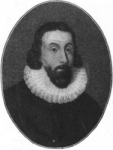
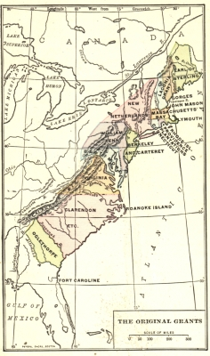
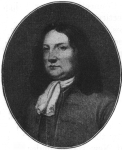
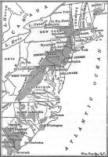
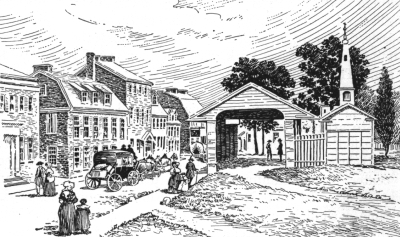
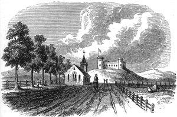

The tide of migration that set in toward the shores of North America during the early years of the seventeenth century was but one phase in the restless and eternal movement of mankind upon the surface of the earth. The ancient Greeks flung out their colonies in every direction, westward as far as Gaul, across the Mediterranean, and eastward into Asia Minor, perhaps to the very confines of India. The Romans, supported by their armies and their government, spread their dominion beyond the narrow lands of Italy until it stretched from the heather of Scotland to the sands of Arabia. The Teutonic tribes, from their home beyond the Danube and the Rhine, poured into the empire of the Cæsars and made the beginnings of modern Europe. Of this great sweep of races and empires the settlement of America was merely a part.

And it was, moreover, only one aspect of the expansion which finally carried the peoples, the institutions, and the trade of Europe to the very ends of the earth.
In one vital point, it must be noted, American colonization differed from that of the ancients. The Greeks usually carried with them affection for the government they left behind and sacred fire from the altar of the parent city; but thousands of the immigrants who came to America disliked the state and disowned the church of the mother country. They established compacts of government for themselves and set up altars of their own. They sought not only new soil to till but also political and religious liberty for themselves and their children.
The Agencies of American Colonization
It was no light matter for the English to cross three thousand miles of water and found homes in the American wilderness at the opening of the seventeenth century. Ships, tools, and supplies called for huge outlays of money. Stores had to be furnished in quantities sufficient to sustain the life of the settlers until they could gather harvests of their own. Artisans and laborers of skill and industry had to be induced to risk the hazards of the new world. Soldiers were required for defense and mariners for the exploration of inland waters. Leaders of good judgment, adept in managing men, had to be discovered. Altogether such an enterprise demanded capital larger than the ordinary merchant or gentleman could amass and involved risks more imminent than he dared to assume. Though in later days, after initial tests had been made, wealthy proprietors were able to establish colonies on their own account, it was the corporation that furnished the capital and leadership in the beginning.
The Trading Company. —English pioneers in exploration found an instrument for colonization in companies of merchant adventurers, which had long been employed in carrying on commerce with foreign countries. Such a corporation was composed of many persons of different ranks of society—noblemen, merchants, and gentlemen—who banded together for a particular undertaking, each contributing a sum of money and sharing in the profits of the venture. It was organized under royal authority; it received its charter, its grant of land, and its trading privileges from the king and carried on its operations under his supervision and control. The charter named all the persons originally included in the corporation and gave them certain powers in the management of its affairs, including the right to admit new members. The company was in fact a little government set up by the king. When the members of the corporation remained in England, as in the case of the Virginia Company, they operated through agents sent to the colony. When they came over the seas themselves and settled in America, as in the case of Massachusetts, they became the direct government of the country they possessed. The stockholders in that instance became the voters and the governor, the chief magistrate.
John Winthrop, Governor of the
Massachusetts Bay Company
Four of the thirteen colonies in America owed their origins to the trading corporation. It was the London Company, created by King James I, in 1606, that laid during the following year the foundations of
Virginia at Jamestown. It was under the auspices of their West India Company, chartered in 1621, that the Dutch planted the settlements of the New Netherland in the valley of the Hudson. The founders of Massachusetts were Puritan leaders and men of affairs whom King Charles I incorporated in 1629 under the title: "The governor and company of the Massachusetts Bay in New England." In this case the law did but incorporate a group drawn together by religious ties. "We must be knit together as one man," wrote John Winthrop, the first Puritan governor in America. Far to the south, on the banks of the Delaware River, a Swedish commercial company in 1638 made the beginnings of a settlement, christened New Sweden; it was destined to pass under the rule of the Dutch, and finally under the rule of William Penn as the proprietary colony of Delaware.
In a certain sense, Georgia may be included among the "company colonies." It was, however, originally conceived by the moving spirit, James Oglethorpe, as an asylum for poor men, especially those imprisoned for debt. To realize this humane purpose, he secured from King George II, in 1732, a royal charter uniting several gentlemen, including himself, into "one body politic and corporate," known as the "Trustees for establishing the colony of Georgia in America." In the structure of their organization and their methods of government, the trustees did not differ materially from the regular companies created for trade and colonization. Though their purposes were benevolent, their transactions had to be under the forms of law and according to the rules of business.
The Religious Congregation. —A second agency which figured largely in the settlement of America was the religious brotherhood, or congregation, of men and women brought together in the bonds of a common religious faith. By one of the strange fortunes of history, this institution, founded in the early days of Christianity, proved to be a potent force in the origin and growth of self-government in a land far away from Galilee. "And the multitude of them that believed were of one heart and of one soul," we are told in the Acts describing the Church at Jerusalem. "We are knit together as a body in a most sacred covenant of the Lord ... by virtue of which we hold ourselves strictly tied to all care of each other's good and of the whole," wrote John Robinson, a leader among the Pilgrims who founded their tiny colony of Plymouth in 1620. The Mayflower Compact, so famous in American history, was but a written and signed agreement, incorporating the spirit of obedience to the common good, which served as a guide to self-government until Plymouth was annexed to Massachusetts in 1691.

Three other colonies, all of which retained their identity until the eve of the American Revolution, likewise sprang directly from the congregations of the faithful: Rhode Island, Connecticut, and New Hampshire, mainly offshoots from Massachusetts. They were founded by small bodies of men and women, "united in solemn covenants with the Lord," who planted their settlements in the wilderness. Not until many a year after Roger Williams and Anne Hutchinson conducted their followers to the Narragansett country was Rhode Island granted a charter of incorporation (1663) by the crown. Not until long after the congregation of Thomas Hooker from Newtown blazed the way into the Connecticut River Valley did the king of England give Connecticut a charter of its own (1662) and a place among the colonies. Half a century elapsed before the towns laid out beyond the Merrimac River by emigrants from Massachusetts were formed into the royal province of New Hampshire in 1679.
Even when Connecticut was chartered, the parchment and sealing wax of the royal lawyers did but confirm rights and habits of self-government and obedience to law previously established by the congregations. The towns of Hartford, Windsor, and Wethersfield had long lived happily under their
"Fundamental Orders" drawn up by themselves in 1639; so had the settlers dwelt peacefully at New Haven under their "Fundamental Articles" drafted in the same year. The pioneers on the Connecticut shore had no difficulty in agreeing that "the Scriptures do hold forth a perfect rule for the direction and government of all men."
The Proprietor. —A third and very important colonial agency was the proprietor, or proprietary. As the name, associated with the word "property," implies, the proprietor was a person to whom the king granted property in lands in North America to have, hold, use, and enjoy for his own benefit and profit, with the right to hand the estate down to his heirs in perpetual succession. The proprietor was a rich and powerful person, prepared to furnish or secure the capital, collect the ships, supply the stores, and assemble the settlers necessary to found and sustain a plantation beyond the seas. Sometimes the proprietor worked alone. Sometimes two or more were associated like partners in the common undertaking.

William Penn,
Proprietor of Pennsylvania
Five colonies, Maryland, Pennsylvania, New Jersey, and the Carolinas, owe their formal origins, though not always their first settlements, nor in most cases their prosperity, to the proprietary system. Maryland, established in 1634 under a Catholic nobleman, Lord Baltimore, and blessed with religious toleration by the act of 1649, flourished under the mild rule of proprietors until it became a state in the American union.
New Jersey, beginning its career under two proprietors, Berkeley and Carteret, in 1664, passed under the direct government of the crown in 1702. Pennsylvania was, in a very large measure, the product of the generous spirit and tireless labors of its first proprietor, the leader of the Friends, William Penn, to whom it was granted in 1681 and in whose family it remained until 1776. The two Carolinas were first organized as one colony in 1663 under the government and patronage of eight proprietors, including Lord Clarendon; but after more than half a century both became royal provinces governed by the king.
The Colonial Peoples
The English. —In leadership and origin the thirteen colonies, except New York and Delaware, were English. During the early days of all, save these two, the main, if not the sole, current of immigration was from England. The colonists came from every walk of life. They were men, women, and children of "all sorts and conditions." The major portion were yeomen, or small land owners, farm laborers, and artisans.
With them were merchants and gentlemen who brought their stocks of goods or their fortunes to the New World. Scholars came from Oxford and Cambridge to preach the gospel or to teach. Now and then the son of an English nobleman left his baronial hall behind and cast his lot with America. The people represented every religious faith—members of the Established Church of England; Puritans who had labored to reform that church; Separatists, Baptists, and Friends, who had left it altogether; and Catholics, who clung to the religion of their fathers.
New England was almost purely English. During the years between 1629 and 1640, the period of arbitrary Stuart government, about twenty thousand Puritans emigrated to America, settling in the colonies of the far North. Although minor additions were made from time to time, the greater portion of the New England people sprang from this original stock. Virginia, too, for a long time drew nearly all her immigrants from England alone. Not until the eve of the Revolution did other nationalities, mainly the Scotch-Irish and Germans, rival the English in numbers.
The populations of later English colonies—the Carolinas, New York, Pennsylvania, and Georgia—while receiving a steady stream of immigration from England, were constantly augmented by wanderers from the older settlements. New York was invaded by Puritans from New England in such numbers as to cause the Anglican clergymen there to lament that "free thinking spreads almost as fast as the Church." North Carolina was first settled toward the northern border by immigrants from Virginia. Some of the North Carolinians, particularly the Quakers, came all the way from New England, tarrying in Virginia only long enough to learn how little they were wanted in that Anglican colony.

The Scotch-Irish. —Next to the English in numbers and influence were the Scotch-Irish, Presbyterians in belief, English in tongue. Both religious and economic reasons sent them across the sea. Their Scotch ancestors, in the days of Cromwell, had settled in the north of Ireland whence the native Irish had been driven by the conqueror's sword. There the Scotch nourished for many years enjoying in peace their own form of religion and growing prosperous in the manufacture of fine linen and woolen cloth. Then the blow fell. Toward the end of the seventeenth century their religious worship was put under the ban and the export of their cloth was forbidden by the English Parliament. Within two decades twenty thousand Scotch-Irish left Ulster alone, for America; and all during the eighteenth century the migration continued to be heavy. Although no exact record was kept, it is reckoned that the Scotch-Irish and the Scotch who came directly from Scotland, composed one-sixth of the entire American population on the eve of the Revolution.
Settlements of German and
Scotch-Irish Immigrants
These newcomers in America made their homes chiefly in New Jersey, Pennsylvania, Maryland, Virginia, and the Carolinas. Coming late upon the scene, they found much of the land immediately upon the seaboard already taken up. For this reason most of them became frontier people settling the interior and upland regions. There they cleared the land, laid out their small farms, and worked as "sturdy yeomen on the soil," hardy, industrious, and independent in spirit, sharing neither the luxuries of the rich planters nor the easy life of the leisurely merchants. To their agriculture they added woolen and linen manufactures, which, flourishing in the supple fingers of their tireless women, made heavy inroads upon the trade of the English merchants in the colonies. Of their labors a poet has sung:
"O, willing hands to toil;
Strong natures tuned to the harvest-song
and bound to the kindly soil;
Bold pioneers for the wilderness,
defenders in the field."
The Germans. —Third among the colonists in order of numerical importance were the Germans. From the very beginning, they appeared in colonial records. A number of the artisans and carpenters in the first Jamestown colony were of German descent. Peter Minuit, the famous governor of New Motherland, was a German from Wesel on the Rhine, and Jacob Leisler, leader of a popular uprising against the provincial administration of New York, was a German from Frankfort-on-Main. The wholesale migration of Germans began with the founding of Pennsylvania. Penn was diligent in searching for thrifty farmers to cultivate his lands and he made a special effort to attract peasants from the Rhine country. A great association, known as the Frankfort Company, bought more than twenty thousand acres from him and in 1684 established a center at Germantown for the distribution of German immigrants. In old New York,

Rhinebeck-on-the-Hudson became a similar center for distribution. All the way from Maine to Georgia inducements were offered to the German farmers and in nearly every colony were to be found, in time, German settlements. In fact the migration became so large that German princes were frightened at the loss of so many subjects and England was alarmed by the influx of foreigners into her overseas dominions. Yet nothing could stop the movement. By the end of the colonial period, the number of Germans had risen to more than two hundred thousand.
The majority of them were Protestants from the Rhine region, and South Germany. Wars, religious controversies, oppression, and poverty drove them forth to America. Though most of them were farmers, there were also among them skilled artisans who contributed to the rapid growth of industries in Pennsylvania. Their iron, glass, paper, and woolen mills, dotted here and there among the thickly settled regions, added to the wealth and independence of the province.
From an old print
A Glimpse of Old Germantown
Unlike the Scotch-Irish, the Germans did not speak the language of the original colonists or mingle freely with them. They kept to themselves, built their own schools, founded their own newspapers, and published their own books. Their clannish habits often irritated their neighbors and led to occasional agitations against "foreigners." However, no serious collisions seem to have occurred; and in the days of the Revolution, German soldiers from Pennsylvania fought in the patriot armies side by side with soldiers from the English and Scotch-Irish sections.
Other Nationalities. —Though the English, the Scotch-Irish, and the Germans made up the bulk of the colonial population, there were other racial strains as well, varying in numerical importance but contributing their share to colonial life.
From France came the Huguenots fleeing from the decree of the king which inflicted terrible penalties upon Protestants.
From "Old Ireland" came thousands of native Irish, Celtic in race and Catholic in religion. Like their Scotch-Irish neighbors to the north, they revered neither the government nor the church of England imposed upon them by the sword. How many came we do not know, but shipping records of the colonial period show that boatload after boatload left the southern and eastern shores of Ireland for the New World.
Undoubtedly thousands of their passengers were Irish of the native stock. This surmise is well sustained by the constant appearance of Celtic names in the records of various colonies.

From an old print
Old Dutch Fort and English Church Near Albany
The Jews, then as ever engaged in their age-long battle for religious and economic toleration, found in the American colonies, not complete liberty, but certainly more freedom than they enjoyed in England, France, Spain, or Portugal. The English law did not actually recognize their right to live in any of the dominions, but owing to the easy-going habits of the Americans they were allowed to filter into the seaboard towns. The treatment they received there varied. On one occasion the mayor and council of New York forbade them to sell by retail and on another prohibited the exercise of their religious worship.
Newport, Philadelphia, and Charleston were more hospitable, and there large Jewish colonies, consisting principally of merchants and their families, flourished in spite of nominal prohibitions of the law.
Though the small Swedish colony in Delaware was quickly submerged beneath the tide of English migration, the Dutch in New York continued to hold their own for more than a hundred years after the English conquest in 1664. At the end of the colonial period over one-half of the 170,000 inhabitants of the province were descendants of the original Dutch—still distinct enough to give a decided cast to the life and manners of New York. Many of them clung as tenaciously to their mother tongue as they did to their capacious farmhouses or their Dutch ovens; but they were slowly losing their identity as the English pressed in beside them to farm and trade.
The melting pot had begun its historic mission.
The Process of Colonization
Considered from one side, colonization, whatever the motives of the emigrants, was an economic matter. It involved the use of capital to pay for their passage, to sustain them on the voyage, and to start them on the way of production. Under this stern economic necessity, Puritans, Scotch-Irish, Germans, and all were alike laid.
Immigrants Who Paid Their Own Way. —Many of the immigrants to America in colonial days were capitalists themselves, in a small or a large way, and paid their own passage. What proportion of the colonists were able to finance their voyage across the sea is a matter of pure conjecture. Undoubtedly a very considerable number could do so, for we can trace the family fortunes of many early settlers. Henry Cabot Lodge is authority for the statement that "the settlers of New England were drawn from the country gentlemen, small farmers, and yeomanry of the mother country.... Many of the emigrants were men of wealth, as the old lists show, and all of them, with few exceptions, were men of property and good standing. They did not belong to the classes from which emigration is usually supplied, for they all had a stake in the country they left behind." Though it would be interesting to know how accurate this statement is or how applicable to the other colonies, no study has as yet been made to gratify that interest. For the
present it is an unsolved problem just how many of the colonists were able to bear the cost of their own transfer to the New World.
Indentured Servants. —That at least tens of thousands of immigrants were unable to pay for their passage is established beyond the shadow of a doubt by the shipping records that have come down to us. The great barrier in the way of the poor who wanted to go to America was the cost of the sea voyage. To overcome this difficulty a plan was worked out whereby shipowners and other persons of means furnished the passage money to immigrants in return for their promise, or bond, to work for a term of years to repay the sum advanced. This system was called indentured servitude.
It is probable that the number of bond servants exceeded the original twenty thousand Puritans, the yeomen, the Virginia gentlemen, and the Huguenots combined. All the way down the coast from Massachusetts to Georgia were to be found in the fields, kitchens, and workshops, men, women, and children serving out terms of bondage generally ranging from five to seven years. In the proprietary colonies the proportion of bond servants was very high. The Baltimores, Penns, Carterets, and other promoters anxiously sought for workers of every nationality to till their fields, for land without labor was worth no more than land in the moon. Hence the gates of the proprietary colonies were flung wide open.
Every inducement was offered to immigrants in the form of cheap land, and special efforts were made to increase the population by importing servants. In Pennsylvania, it was not uncommon to find a master with fifty bond servants on his estate. It has been estimated that two-thirds of all the immigrants into Pennsylvania between the opening of the eighteenth century and the outbreak of the Revolution were in bondage. In the other Middle colonies the number was doubtless not so large; but it formed a considerable part of the population.
The story of this traffic in white servants is one of the most striking things in the history of labor.
Bondmen differed from the serfs of the feudal age in that they were not bound to the soil but to the master.
They likewise differed from the negro slaves in that their servitude had a time limit. Still they were subject to many special disabilities. It was, for instance, a common practice to impose on them penalties far heavier than were imposed upon freemen for the same offense. A free citizen of Pennsylvania who indulged in horse racing and gambling was let off with a fine; a white servant guilty of the same unlawful conduct was whipped at the post and fined as well.
The ordinary life of the white servant was also severely restricted. A bondman could not marry without his master's consent; nor engage in trade; nor refuse work assigned to him. For an attempt to escape or indeed for any infraction of the law, the term of service was extended. The condition of white bondmen in Virginia, according to Lodge, "was little better than that of slaves. Loose indentures and harsh laws put them at the mercy of their masters." It would not be unfair to add that such was their lot in all other colonies. Their fate depended upon the temper of their masters.
Cruel as was the system in many ways, it gave thousands of people in the Old World a chance to reach the New—an opportunity to wrestle with fate for freedom and a home of their own. When their weary years of servitude were over, if they survived, they might obtain land of their own or settle as free mechanics in the towns. For many a bondman the gamble proved to be a losing venture because he found himself unable to rise out of the state of poverty and dependence into which his servitude carried him. For thousands, on the contrary, bondage proved to be a real avenue to freedom and prosperity. Some of the best citizens of America have the blood of indentured servants in their veins.
The Transported—Involuntary Servitude. —In their anxiety to secure settlers, the companies and proprietors having colonies in America either resorted to or connived at the practice of kidnapping men, women, and children from the streets of English cities. In 1680 it was officially estimated that "ten thousand persons were spirited away" to America. Many of the victims of the practice were young children, for the traffic in them was highly profitable. Orphans and dependents were sometimes disposed
of in America by relatives unwilling to support them. In a single year, 1627, about fifteen hundred children were shipped to Virginia.
In this gruesome business there lurked many tragedies, and very few romances. Parents were separated from their children and husbands from their wives. Hundreds of skilled artisans—carpenters, smiths, and weavers—utterly disappeared as if swallowed up by death. A few thus dragged off to the New World to be sold into servitude for a term of five or seven years later became prosperous and returned home with fortunes. In one case a young man who was forcibly carried over the sea lived to make his way back to England and establish his claim to a peerage.
Akin to the kidnapped, at least in economic position, were convicts deported to the colonies for life in lieu of fines and imprisonment. The Americans protested vigorously but ineffectually against this practice.
Indeed, they exaggerated its evils, for many of the "criminals" were only mild offenders against unduly harsh and cruel laws. A peasant caught shooting a rabbit on a lord's estate or a luckless servant girl who purloined a pocket handkerchief was branded as a criminal along with sturdy thieves and incorrigible rascals. Other transported offenders were "political criminals"; that is, persons who criticized or opposed the government. This class included now Irish who revolted against British rule in Ireland; now Cavaliers who championed the king against the Puritan revolutionists; Puritans, in turn, dispatched after the monarchy was restored; and Scotch and English subjects in general who joined in political uprisings against the king.
The African Slaves. —Rivaling in numbers, in the course of time, the indentured servants and whites carried to America against their will were the African negroes brought to America and sold into slavery.
When this form of bondage was first introduced into Virginia in 1619, it was looked upon as a temporary necessity to be discarded with the increase of the white population. Moreover it does not appear that those planters who first bought negroes at the auction block intended to establish a system of permanent bondage. Only by a slow process did chattel slavery take firm root and become recognized as the leading source of the labor supply. In 1650, thirty years after the introduction of slavery, there were only three hundred Africans in Virginia.
The great increase in later years was due in no small measure to the inordinate zeal for profits that seized slave traders both in Old and in New England. Finding it relatively easy to secure negroes in Africa, they crowded the Southern ports with their vessels. The English Royal African Company sent to America annually between 1713 and 1743 from five to ten thousand slaves. The ship owners of New England were not far behind their English brethren in pushing this extraordinary traffic.
As the proportion of the negroes to the free white population steadily rose, and as whole sections were overrun with slaves and slave traders, the Southern colonies grew alarmed. In 1710, Virginia sought to curtail the importation by placing a duty of £5 on each slave. This effort was futile, for the royal governor promptly vetoed it. From time to time similar bills were passed, only to meet with royal disapproval. South Carolina, in 1760, absolutely prohibited importation; but the measure was killed by the British crown. As late as 1772, Virginia, not daunted by a century of rebuffs, sent to George III a petition in this vein: "The importation of slaves into the colonies from the coast of Africa hath long been considered as a trade of great inhumanity and under its present encouragement, we have too much reason to fear, will endanger the very existence of Your Majesty's American dominions.... Deeply impressed with these sentiments, we most humbly beseech Your Majesty to remove all those restraints on Your Majesty's governors of this colony which inhibit their assenting to such laws as might check so very pernicious a commerce."
All such protests were without avail. The negro population grew by leaps and bounds, until on the eve of the Revolution it amounted to more than half a million. In five states—Maryland, Virginia, the two Carolinas, and Georgia—the slaves nearly equalled or actually exceeded the whites in number. In South Carolina they formed almost two-thirds of the population. Even in the Middle colonies of Delaware and
Pennsylvania about one-fifth of the inhabitants were from Africa. To the North, the proportion of slaves steadily diminished although chattel servitude was on the same legal footing as in the South. In New York approximately one in six and in New England one in fifty were negroes, including a few freedmen.
The climate, the soil, the commerce, and the industry of the North were all unfavorable to the growth of a servile population. Still, slavery, though sectional, was a part of the national system of economy. Northern ships carried slaves to the Southern colonies and the produce of the plantations to Europe. "If the Northern states will consult their interest, they will not oppose the increase in slaves which will increase the commodities of which they will become the carriers," said John Rutledge, of South Carolina, in the convention which framed the Constitution of the United States. "What enriches a part enriches the whole and the states are the best judges of their particular interest," responded Oliver Ellsworth, the distinguished spokesman of Connecticut.
References
E. Charming, History of the United States, Vols. I and II.
J.A. Doyle, The English Colonies in America (5 vols.).
J. Fiske, Old Virginia and Her Neighbors (2 vols.).
A.B. Faust, The German Element in the United States (2 vols.).
H.J. Ford, The Scotch-Irish in America.
L. Tyler, England in America (American Nation Series).
R. Usher, The Pilgrims and Their History.
Questions
1. America has been called a nation of immigrants. Explain why.
2. Why were individuals unable to go alone to America in the beginning? What agencies made colonization possible? Discuss each of them.
3. Make a table of the colonies, showing the methods employed in their settlement.
4. Why were capital and leadership so very important in early colonization?
5. What is meant by the "melting pot"? What nationalities were represented among the early colonists?
6. Compare the way immigrants come to-day with the way they came in colonial times.
7. Contrast indentured servitude with slavery and serfdom.
8. Account for the anxiety of companies and proprietors to secure colonists.
9. What forces favored the heavy importation of slaves?
10. In what way did the North derive advantages from slavery?
Research Topics
The Chartered Company. —Compare the first and third charters of Virginia in Macdonald, Documentary Source Book of American History, 1606-1898, pp. 1-14. Analyze the first and second Massachusetts charters in Macdonald, pp. 22-84. Special reference: W.A.S. Hewins, English Trading Companies.
Congregations and Compacts for Self-government. —A study of the Mayflower Compact, the Fundamental Orders of Connecticut and the Fundamental Articles of New Haven in Macdonald, pp. 19, 36, 39. Reference: Charles Borgeaud, Rise of Modern Democracy, and C.S. Lobingier, The People's Law, Chaps. I-VII.
The Proprietary System. —Analysis of Penn's charter of 1681, in Macdonald, p. 80. Reference: Lodge, Short History of the English Colonies in America, p. 211.
Studies of Individual Colonies. —Review of outstanding events in history of each colony, using Elson, History of the United States, pp. 55-159, as the basis.
Biographical Studies. —John Smith, John Winthrop, William Penn, Lord Baltimore, William Bradford, Roger Williams, Anne Hutchinson, Thomas Hooker, and Peter Stuyvesant, using any good encyclopedia.
Indentured Servitude. —In Virginia, Lodge, Short History, pp. 69-72; in Pennsylvania, pp. 242-244.
Contemporary account in Callender, Economic History of the United States, pp. 44-51. Special reference: Karl Geiser, Redemptioners and Indentured Servants (Yale Review, X, No. 2 Supplement).
Slavery. —In Virginia, Lodge, Short History, pp. 67-69; in the Northern colonies, pp. 241, 275, 322, 408, 442.
The People of the Colonies. —Virginia, Lodge, Short History, pp. 67-73; New England, pp. 406-409, 441-450; Pennsylvania, pp. 227-229, 240-250; New York, pp. 312-313, 322-335.